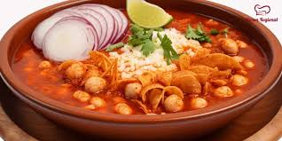

Sobre Nosotros
Ubicación: Av. Revolución 123, Centro
Orale Juanito es el corazón de la cocina mexicana. Ofrecemos una experiencia auténtica con recetas tradicionales que evocan los sabores y aromas más auténticos de México.
Platos Típicos

Tacos al Pastor
Deliciosos tacos preparados con carne marinada, piña, cebolla y cilantro, servidos en tortillas recién hechas.

Pozole
Un guiso tradicional a base de maíz cacahuazintle, carne de cerdo y especias, acompañado de lechuga, rábanos y limón.

Chiles en Nogada
Chiles poblanos rellenos de picadillo, bañados con una salsa de nuez y adornados con granada y perejil.